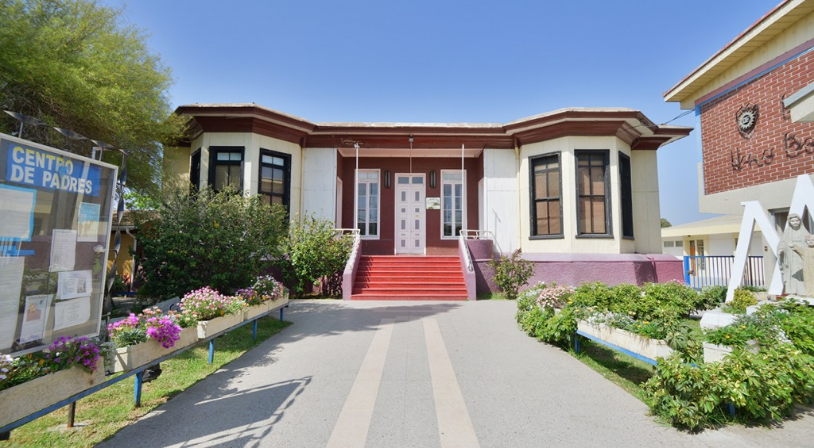

Resultados SIMCE de Matemática en establecimientos con la Metodología Singapur, asesorados por el Centro Felix Klein
De acuerdo a los resultados recientemente dados a conocer por el Ministerio de Educación, más de la mitad de los colegios asesorados por el Centro Felix Klein en 2016 mostraron un aumento en sus resultados SIMCE de Matemática en 4° Básico y solo 3 de ellos disminuyeron de forma significativa.
Dos cursos de 4° Básico de la Escuela Industrial Ernesto Bertelsen destacan por mostrar un aumento significativo no solo en relación al año anterior, sino también con respecto a escuelas nacionales con similar GSE (grupo socioeconómico).
En la Escuela Industrial Ernesto Bertelsen de la congregación Marista, a 4 años de que el Centro Felix Klein los asesore de forma integral en la implementación del Método Singapur en Matemática y junto al compromiso de la comunidad Marista, destaca la generación de estudiantes que rindió el SIMCE de Matemática de 4° Básico 2016 que mostró un aumento de 54 puntos, lo que además de ser estadísticamente significativo, los ubica 36 puntos por sobre escuelas nacionales con similar grupo socioeconómico.
Los resultados recientemente publicados han hecho que la comunidad de Quillota se sienta orgullosa de sus logros y, pese a las dificultades propias de establecimientos con GSE medio bajo, han mostrado que gracias al compromiso directivo y docente todos los cambios son posibles y que una estrategia de enseñanza de calidad, asumida con compromiso y responsabilidad, puede guiarlos adecuadamente hacia la equidad que tanto anhela nuestro país.
Como Centro, nos sentimos orgullosos de haber sido parte de este proceso de formación de los docentes de estos cursos y creemos firmemente que un trabajo mancomunado con la escuela es el camino hacia la mejora significativa en los aprendizajes de los estudiantes de nuestro país, con énfasis en los sectores más vulnerables.